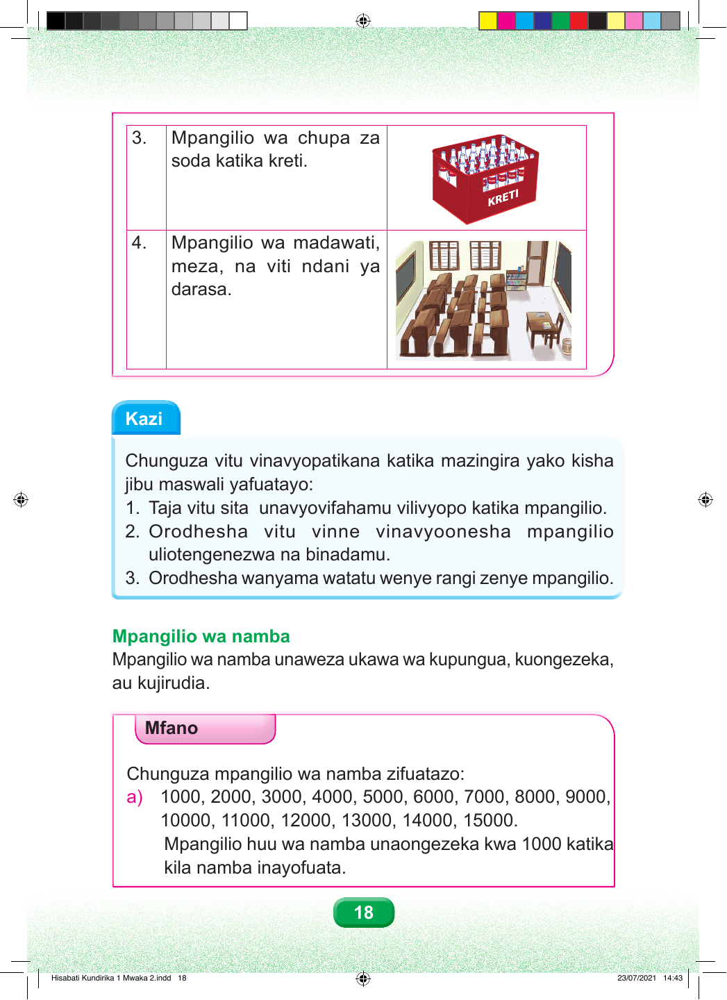

Mfano wa tatu. Mpangilio wa chupa za soda katika kreti. Kreti nyekundu ina chupa za soda zilizosimama na kupangwa katika mistari na safu. Mfano wa nne. Mpangilio wa madawati, meza, na viti ndani ya darasa. Madawati na viti vimepangwa katika mistari kadhaa inayoelekea mbele ya darasa. Kazi. Chunguza vitu vinavyopatikana katika mazingira yako, kisha jibu maswali yafuatayo. Swali namba moja. Taja vitu sita unavyovifahamu vilivyopo katika mpangilio. Swali namba mbili. Orodhesha vitu vinne vinavyoonesha mpangilio uliotengenezwa na binadamu. Swali namba tatu. Orodhesha wanyama watatu wenye rangi zenye mpangilio. Mpangilio wa namba. Mpangilio wa namba unaweza ukawa wa kupungua, kuongezeka, au kujirudia. Mfano. Chunguza mpangilio wa namba zifuatazo. Soma kutoka kushoto kwenda kulia. Sehemu a. Elfu moja. Elfu mbili. Elfu tatu. Elfu nne. Elfu tano. Elfu sita. Elfu saba. Elfu nane. Elfu tisa. Elfu kumi. Elfu kumi na moja. Elfu kumi na mbili. Elfu kumi na tatu. Elfu kumi na nne. Elfu kumi na tano. Mpangilio huu wa namba unaongezeka kwa elfu moja katika kila namba inayofuata.